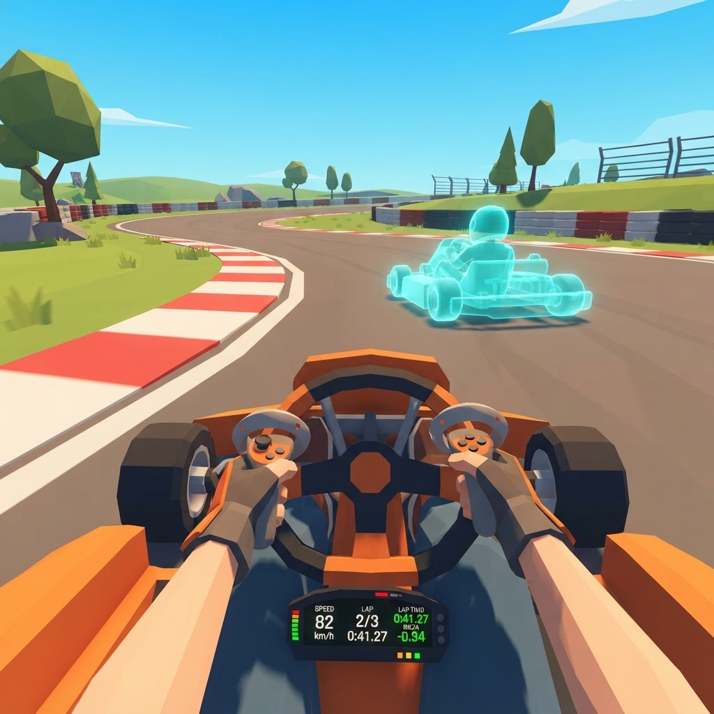
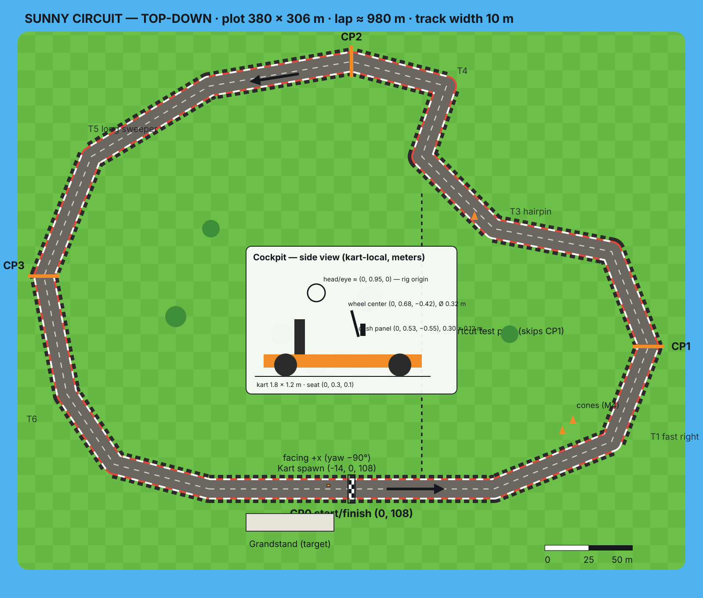
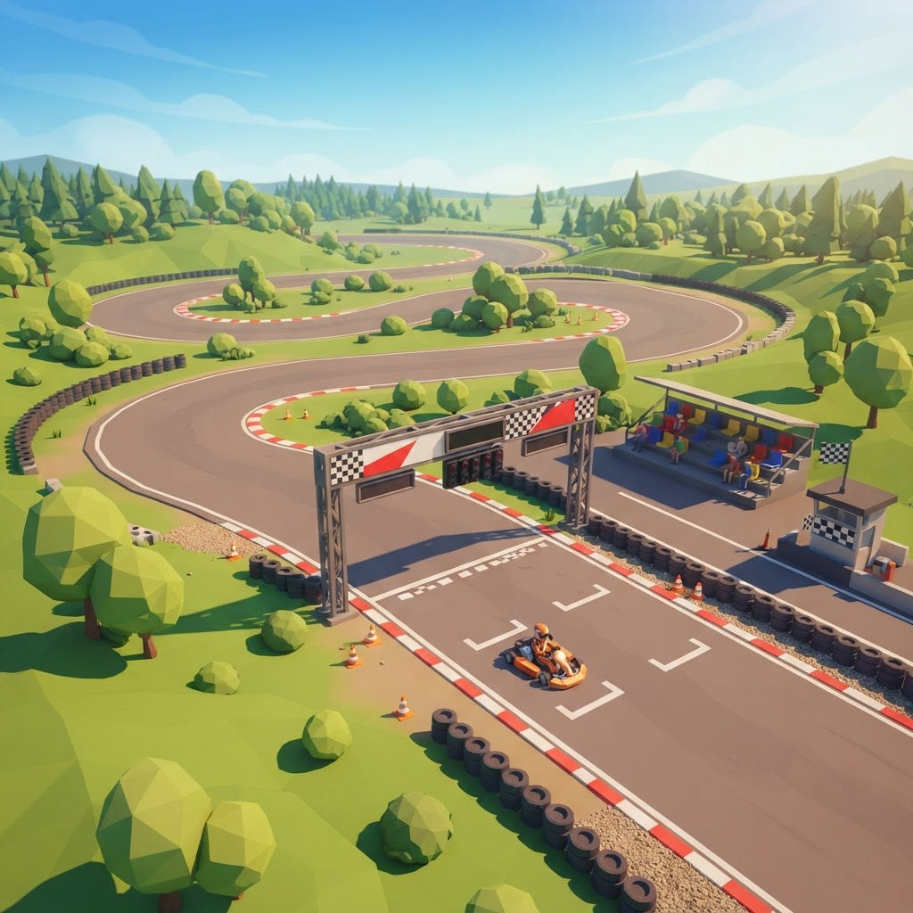
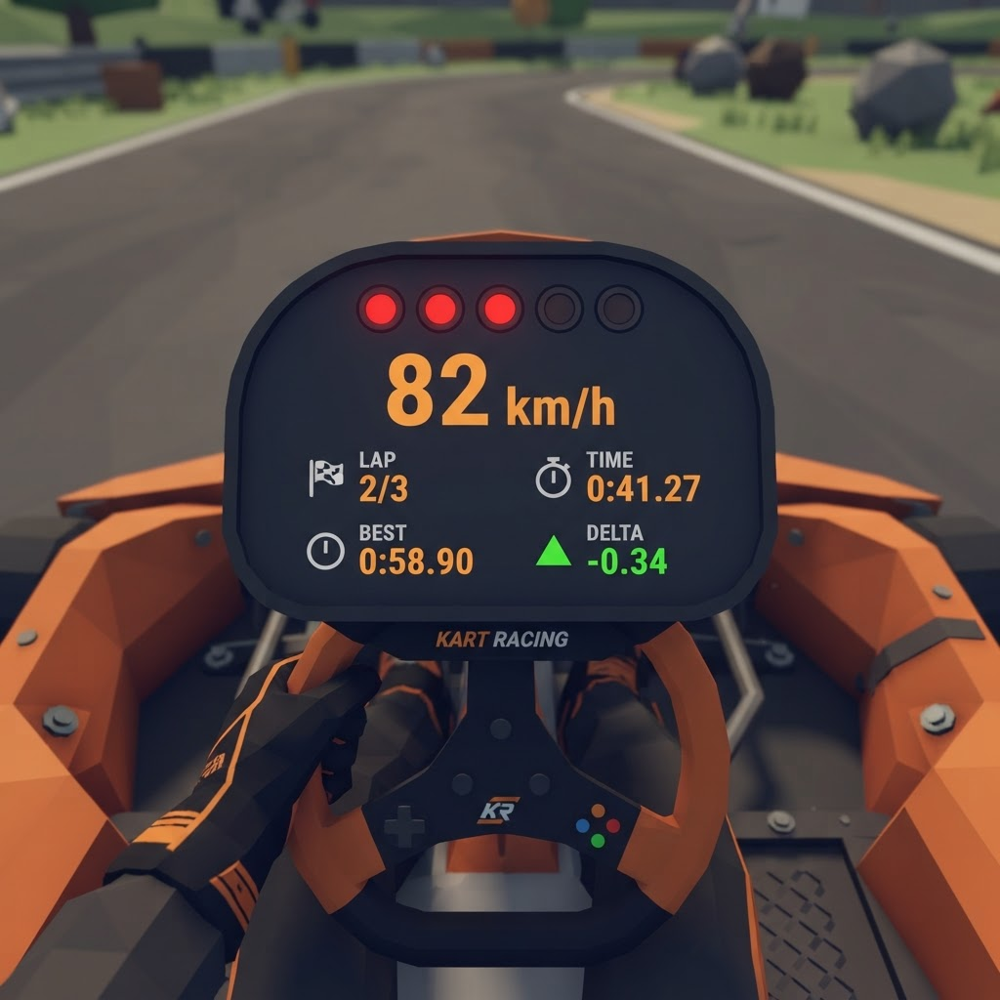

IWSDK · design deck · phase 2
Sunny Circuit
A low-poly kart time trial you drive from the seat. Grab the wheel, squeeze the trigger, beat your own ghost.

Fantasy & pillars
You are the driver, and the only rival is you.
The cockpit is the game
Wheel, dash and kart body are always in view. They are the VR comfort frame and they carry the HUD, so there is no floating 2D overlay.
Beat yourself
One track, one clock, one ghost. Every system answers "was that lap faster?", so the ghost and delta come before scenery.
Arcade, not sim
Forgiving grip and quick wall recovery, with no setup screens. You're driving within 5 seconds of loading.
Core loop · ~3 minutes per run
Countdown, lap, delta, repeat
Mechanics M1–M8
| # | Mechanic | Verb | Response / feedback |
|---|---|---|---|
| M1 | Steering wheel | grab + rotate · A/D · stick | wheel turns visibly, kart yaws |
| M2 | Throttle & brake | R/L trigger · W/S | engine note rises, kart accelerates |
| M3 | Kart handling | — | arcade grip, light drift, ~25 m/s top |
| M4 | Physics collisions | hit barriers / cones | bounce + thud, keep driving |
| M5 | Lap timing | cross start/finish | checkpoints stop cuts; chime + time |
| M6 | Best-lap ghost | — | translucent cyan kart replays best lap |
| M7 | Engine & tire audio | — | pitch from RPM, squeal from slip |
| M8 | Dashboard HUD | look down | speed, lap, time, best, delta, lights |
The space

~980 m lap, 10 m wide
- Spawn
(-14, 0, 108), facing +x - CP0 start/finish → CP1 → CP2 → CP3 in order
- Six corners: fast right, hairpin, long sweeper
- Barriers line both edges; cones at T1 and T3
- Cockpit: eye 0.95 m, wheel 0.42 m ahead, dash 0.55 m ahead
Key moment

Lap 2, T3 hairpin, ghost 0.3 s ahead
You brake later than last time, clip the curb and watch the cyan ghost pull back into reach. The dash delta flips from red to green.
Interaction model
| Action | VR controllers | Keyboard | Gamepad |
|---|---|---|---|
| Steer | grip the wheel rim (squeeze), rotate hands | A / D · ← → | left stick |
| Throttle | right trigger | W · ↑ | right trigger |
| Brake / reverse | left trigger | S · ↓ | left trigger |
| Start / restart | point + trigger on dash button | Enter · R | A · Start |
| Recenter seat | system recenter | — | — |
The wheel works one-handed. With both hands on it, the steering angle comes from the angle between the two grip points.
Art & audio direction
Flat-shaded, code-built primitives, a single warm sun direction and a gradient sky dome. The ghost is the only translucent material.

Audio moments
- Engine loop: pitch and volume from RPM
- Tire squeal loop: volume from lateral slip
- Collision thud: on barrier contact
- Countdown beeps ×3, plus a high beep on go
- Lap chime, new-best fanfare
Scope
MVP
3-lap time trial in VR and browser · wheel steering · physics collisions · dash HUD · engine/tire audio · best-lap ghost
Target
Results panel with splits · sector times · grandstand, trees, flags
Stretch / non-goals
AI opponents · multiplayer · more tracks · leaderboards · customization · weather
Done means success criteria S1–S9 pass in the live runtime: drive, wheel steer, browser keys, barrier collision, lap count, anti-cut, ghost replay, engine pitch, clean console.
Tech snapshot (refined in phase 3)
World config
- xr:
ImmersiveVR, offered, not required - features:
physics,grabbing,spatialUI locomotion: false; the player rig is parented to the kart- sky:
DomeGradient+IBLGradienton the level root
Custom systems (expected)
- KartInput (wheel angle, keys, triggers)
- KartDrive (arcade model over physics)
- LapTimer (checkpoints, laps, best)
- Ghost (record + replay)
- KartAudio · Dashboard binding